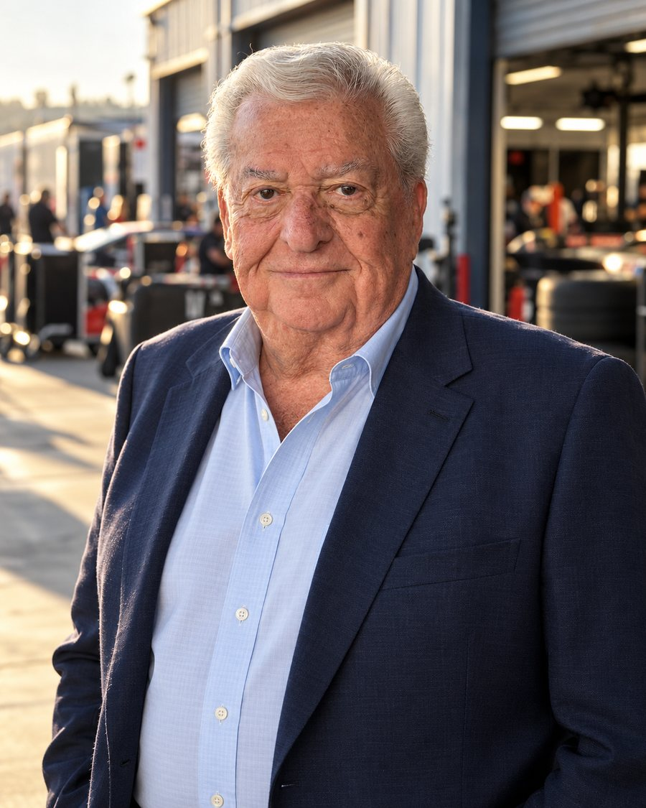

In the garage areaThe start
It began in a garage in Walnut Creek
I was about twelve when I started hanging around a service station garage in Walnut Creek where the local racers kept their cars.
By 1955 I was on a pit crew, and that was the year our team won the Pacific Coast Grand National title. I served in the Navy after that, at Naval Air Station Point Mugu and aboard the USS Duncan.
What came next all pointed the same way. I sold cars. I promoted races at Vallejo Speedway through the 1960s. I worked on Sears Point Raceway, the track that is Sonoma Raceway today. I spent a spell at Autoweek. None of it looked like a career at the time, and all of it turned out to be one.